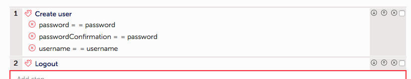
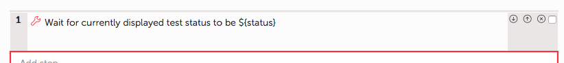
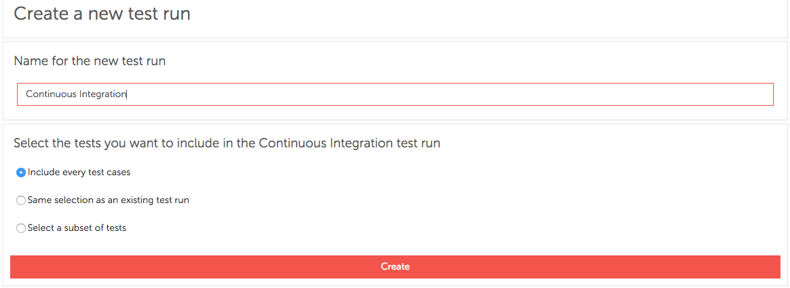

Not a vanilla example
Real life use-case
30 tests and action word
More than 600 CI builds
Scenarios contain only calls to action words
it "Organization update" do
load_coffee_machine_project
create_organization_named_name("Hiptest")
check_organization_name_exists("Hiptest")
check_organization_has_count_users("2")
remove_user_name_from_organization("john")
check_organization_has_count_users("1")
add_user_email_to_the_organization("john@hiptest.net")
check_organization_has_count_users("2")
close_browsers
end
Two type of action words:
high-level: only call other action words
leaf: only contain action/result steps

> gem install hiptest-publisher
> hiptest-publisher --token=123456 --language=javascript
token = '123456789'
language=javascript
framework=jasmine
output_directory = './'
Do not forget to store that in Git/SVN
Well, that's your job ;)
And again, keep it in Git/SVN
Create a dedicated test run
Install hiptest-publisher on CI slave
Fetch tests before results
hiptest-publisher -c hiptest-publisher.config --tests-only --test-run-id=3054Push results after execution
hiptest-publisher -c hiptest-publisher.config -p results.xml